<!DOCTYPE html>


<html lang="zh-CN">


<head>
  <meta charset="utf-8" />
    
  <meta name="viewport" content="width=device-width, initial-scale=1, maximum-scale=1" />
  <title>
    linear model in statistics |  VincereZhou&#39;s blog
  </title>
  <meta name="generator" content="hexo-theme-ayer">
  
  <link rel="shortcut icon" href="/images/mojie.jpg" />
  
  
<link rel="stylesheet" href="/dist/main.css">

  <link rel="stylesheet" href="https://cdn.jsdelivr.net/gh/Shen-Yu/cdn/css/remixicon.min.css">
  
<link rel="stylesheet" href="/css/custom.css">

  
  <script src="https://cdn.jsdelivr.net/npm/pace-js@1.0.2/pace.min.js"></script>
  
  

  

<link rel="alternate" href="/atom.xml" title="VincereZhou's blog" type="application/atom+xml">
</head>

</html>

<body>
  <div id="app">
    
      
    <main class="content on">
      <section class="outer">
  <article
  id="post-linear-model-in-statistics"
  class="article article-type-post"
  itemscope
  itemprop="blogPost"
  data-scroll-reveal
>
  <div class="article-inner">
    
    <header class="article-header">
       
<h1 class="article-title sea-center" style="border-left:0" itemprop="name">
  linear model in statistics
</h1>
 

    </header>
     
    <div class="article-meta">
      <a href="/posts/d51e95ef/" class="article-date">
  <time datetime="2021-04-23T09:12:31.000Z" itemprop="datePublished">2021-04-23</time>
</a> 
  <div class="article-category">
    <a class="article-category-link" href="/categories/%E7%90%86%E8%AE%BA%E5%AD%A6%E4%B9%A0/">理论学习</a> / <a class="article-category-link" href="/categories/%E7%90%86%E8%AE%BA%E5%AD%A6%E4%B9%A0/%E7%BA%BF%E6%80%A7%E6%A8%A1%E5%9E%8B/">线性模型</a>
  </div>
  
<div class="word_count">
    <span class="post-time">
        <span class="post-meta-item-icon">
            <i class="ri-quill-pen-line"></i>
            <span class="post-meta-item-text"> 字数统计:</span>
            <span class="post-count">3.8k</span>
        </span>
    </span>

    <span class="post-time">
        &nbsp; | &nbsp;
        <span class="post-meta-item-icon">
            <i class="ri-book-open-line"></i>
            <span class="post-meta-item-text"> 阅读时长≈</span>
            <span class="post-count">14 分钟</span>
        </span>
    </span>
</div>
 
    </div>
      
    <div class="tocbot"></div>


  
    <div class="article-entry" itemprop="articleBody">
       
  <p>这本书是讲线性模型，但是之前我应该只看了基础部分……</p>
<p>以后接着看再续上</p>
<span id="more"></span>
<h1>Linear Models In Statistics</h1>
<p>本书的目的之一是清晰地阐述；第二个目的是说清楚不同方法的关系。</p>
<p>本书可以作为参考书（reference book），也可以作为教科书（textbook)。</p>
<h2 id="introduce">introduce</h2>
<h3 id="简单的线性回归模型">简单的线性回归模型</h3>
<p>举例，工资与受教育年限的关系，身高和体重的关系，海拔与水沸腾的温度，药剂与效应的关系。模型如下</p>
<figure class="highlight plain"><table><tr><td class="gutter"><pre><span class="line">1</span><br></pre></td><td class="code"><pre><span class="line">y &#x3D; β0 + β1x + e(这个字母不好打，用e代替) （1.1）</span><br></pre></td></tr></table></figure>
<p>模型符合线性关系是一种假设，除此之外，我们还有其它的假设，比如残差的分布，观测值之间的独立性等等。</p>
<h3 id="MULTIPLE-LINEAR-REGRESSION-MODEL">MULTIPLE  LINEAR  REGRESSION  MODEL</h3>
<figure class="highlight plain"><table><tr><td class="gutter"><pre><span class="line">1</span><br></pre></td><td class="code"><pre><span class="line">y &#x3D; β0 + β1x1 + β2x2 + …… + βkxk + e(这个字母不好打，用e代替) （1.2）</span><br></pre></td></tr></table></figure>
<p>The model in (1.2) is linear in the β parameters; it is not necessarily linear in the x variables. Thus models such as</p>
<p>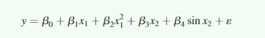</p>
<blockquote>
<p>A model provides a theoretical framework for better understanding of a phenomenon  of  interest.  Thus  a  model  is  a  mathematical  construct  that  we  believe  mayrepresent  the  mechanism  that  generated  the  observations  at  hand.  The  postulated model may be an idealized  oversimplification of the  complex real-world situation,but  in  many  such  cases,  empirical  models  provide  useful  approximations  of  therelationships  among  variables.  These  relationships  may  be  either  associative  orcausative.</p>
</blockquote>
<p>上面的话的简单解释。一个好的模型一定是比较符合变量的内部机制的。模型可能因为过度简化了复杂的真实情况而显得理想化，但是大部分情况下，凭借经验建立的模型往往能够有效地说明变量之间的关系，无论它们之间是相关关系还是因果关系。</p>
<p>回归模型可以用于：</p>
<ol>
<li>预测</li>
<li>描述数据</li>
<li>参数估计（β）</li>
<li><strong>变量选择或筛查</strong>：通过回归分析，决定每个自变量对因变量的重要性。能够大量解释y的方差的变量保留，否则剔除。</li>
<li>结果控制。回归模型假定x,y存在因果关系；因此，我们可以通过控制x的范围，来得到我们想要的理想范围的y。</li>
</ol>
<p>这5种目的有本质的区别。对于预测，我们只需要假设当我们用先前的数据得到的关系预测新的数据，仍然成立。我们通过回归模型得到y 与 x存在显著性关系，并不能证明它们之间存在因果关系。</p>
<h3 id="方差分析">方差分析</h3>
<p>方差分析一般用于比较几个群体或几种方法的区别。方差分析也可以理解为一种特别的线性模型，它的x 的值只有0和1。举个例子，某实验人员需要比较4种催化剂的作用。其模型可以设置为如下</p>
<p>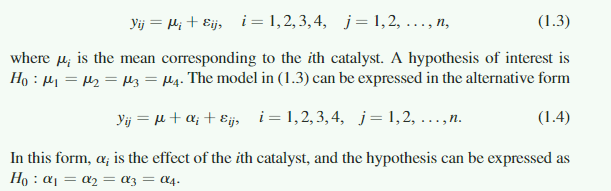</p>
<p>假设研究人员还想看三种不同温度的影响。对这12种催化剂-温度效应每一种进行n次实验。模型如下：</p>
<p>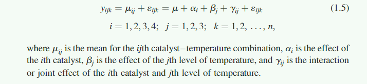</p>
<p>方差分析可以理解为一种特殊的回归模型，但是一般还是把这两者分开比较方便。</p>
<h2 id="Matrix-Algebra">Matrix Algebra</h2>
<p>我们一般用加粗的大写字母表示矩阵；用加粗的小写字母表示列向量（即向量默认为竖着的）。</p>
<p>在矩阵和向量的章节中，一个具体的实数称为标量（scalar）。比如2.5就是一个标量，标量一般用不加粗的小写字母表示。</p>
<p>如果一个矩阵的转置矩阵等于其本身（<strong>A’ = A</strong>）, 那么这个矩阵是对阵矩阵（而且是方阵）。</p>
<p>以下这些公式不用死记，在脑子举个例子过一遍就理解了。</p>
<ul>
<li>**（A + B)’ = A’ + B’ **</li>
<li>一般，** AB 不等于 BA**</li>
<li>** A(B + C) = AB + AC **  （乘法符合分配律）</li>
<li>** (A + B) C = AC + BC **</li>
<li>** (A-B) (C-D) = (A-B) C - (A-B) D = AC - BC - AD + BD ** (进一步扩展)</li>
<li>** (AB)’ = B’A’ **</li>
</ul>
<h3 id="矩阵分段">矩阵分段</h3>
<p>有的时候将矩阵划分为几个子矩阵很方便。比如在矩阵相乘时，<strong>如 A 和 B 矩阵 的结构相同，划分子矩阵的结构也相同</strong>，那么 AB 可以转化为子矩阵的相乘（类似于元素的相乘）</p>
<p>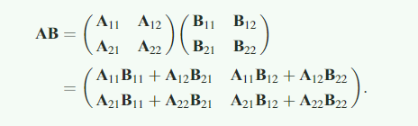</p>
<p>如果把<strong>B</strong>换成一个向量<strong>b</strong>，仍然可以划分成子矩阵和子向量。其中A1的列数目等于b1的元素数目</p>
<p>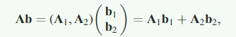</p>
<p>更极端地，将<strong>A</strong>的每一列划分为一个子矩阵，将<strong>b</strong>的每一个元素视为一个子向量。例子如下</p>
<p>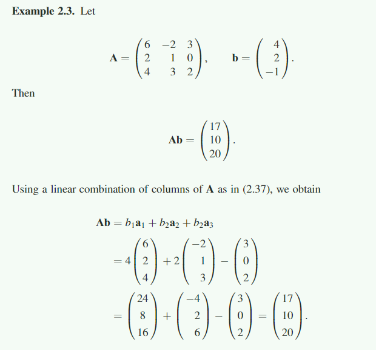</p>
<p>分块矩阵的转置</p>
<p>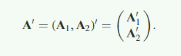</p>
<h3 id="秩">秩</h3>
<p>dependent 的定义如下：对于一系列的向量a1,a2,……，an，如果存在标量 c1,c2,……cn（不全为0），使得</p>
<p>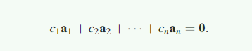</p>
<p>那么我们就说是 dependent</p>
<p>如果不存在c1,c2,……cn，那么我们说a1,a2,……，an 是 线性不相关的。反过来，如果存在c1,c2,……cn，那么我们说，至少有一个a~i~ 是其它a向量的线性组合。</p>
<p>秩就是一个矩阵中线性不相关的行或列的数目。</p>
<p>很容易证明矩阵（square or rectangular）中，线性不相关的行的数目 = 线性不相关的列的数目。</p>
<p>在rectangular matrix中，如果是n × p，那么这个矩阵的最大的秩为 min(n,p)。<strong>因此，在一个rectangular matrix中，至少行或列（or both）是线性相关的</strong>。</p>
<p>由于一个矩阵的行或列可能存在线性相关，我们可以创造出 <strong>AB = CB</strong>, 但是 <strong>A</strong> 不等于 <strong>C</strong>。这也就是为什么，在矩阵方程式中，<strong>我们一般不能约掉左右两边共同的矩阵</strong>。但是有两个例外情况：</p>
<ol>
<li><strong>B</strong>是一个满秩的方阵，那么此时<strong>AB=CB</strong>，就意味着<strong>A=C</strong>。</li>
<li>如果对于任何的<strong>B</strong>矩阵都存在<strong>AB=CB</strong>，那么<strong>A=C</strong>。</li>
</ol>
<p>可以给出一个例子。比如<strong>B</strong>是一个2×2的元素均为1的矩阵。A也是一个2×2的矩阵，那么<strong>AB</strong>的第一行元素为a11+a12，第二行元素为a21+a22。对于特定的<strong>AB</strong>，只要保证<strong>A</strong>每行的和相同即可，也就是可以构建出无数的<strong>A</strong>阵。</p>
<p>对于矩阵乘积，秩满足如下条件</p>
<ul>
<li>如果A 和 B <strong>are confromal for multiplication</strong>, 那么 rank(AB) &lt;= rank(A) ;rank(AB) &lt;= ran(B)</li>
<li>左乘或右乘一个满秩的矩阵，不会改变秩的大小。假如 B 和 C 是满秩的方阵，那么 rank(AB) = rank(CA) = rank(A)</li>
<li>对于任何一个矩阵，rank(<strong>A’A</strong>) = rank(<strong>AA’</strong>) = rank(<strong>A’</strong>) = rank(<strong>A</strong>)</li>
</ul>
<h3 id="逆矩阵">逆矩阵</h3>
<p>我们一般把一个满秩的<strong>方</strong>阵叫做非奇异阵（nonsigular），而非奇异阵有一个唯一的逆矩阵。把不满秩的矩阵叫做奇异阵（sigular），奇异阵没有逆矩阵（rectangular matrices 都没有逆矩阵）。<br>
如果<strong>B</strong>是一个非奇异阵，<strong>AB = CB</strong>，那么左右两边都可以乘以<strong>B^-^</strong>，那么就得到了<strong>A=C</strong>。（但是如果B不满秩，或者是rectangular，那么就不能这么做）。</p>
<p>类似的，如果<strong>A</strong>是一个非奇异阵，那么<strong>Ax=c</strong>的求解，等于左右两边均左乘A-1，得到<strong>x=A-1c</strong></p>
<p>逆矩阵性质：</p>
<ol>
<li>如果A为<strong>非奇异阵</strong>，那么**A’**也是一个非奇异阵，并且其逆阵满足：<br>
(A)^-1^ = (A^-1^)’</li>
<li>如果A和B均为非奇异阵且大小相同（方阵能相乘肯定大小相同），那么<strong>AB</strong>也是一个非奇异阵，并且<br>
**(AB)^-1^ = B^-1^A^-1^</li>
</ol>
<p>特殊例子</p>
<p>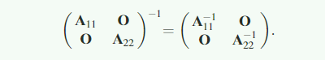</p>
<h3 id="正定矩阵">正定矩阵</h3>
<p>二次型都可以写成<strong>y’Ay</strong>的格式。如下例子，其中的<strong>A</strong>阵其实不唯一，但是如果将<strong>A</strong>表达为对称阵，那么此时A阵是唯一的。</p>
<p>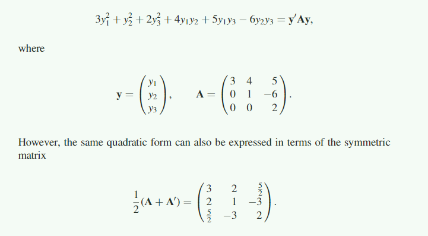</p>
<p>如果<strong>A阵</strong>具有这种性质：无论<strong>y</strong>向量是什么（0向量除外），<strong>y’Ay</strong> 均大于0，那么我们说二次型<strong>y’Ay</strong>是正定的（positive definite），<strong>A</strong>是正定矩阵。如果对于所有的<strong>y</strong>，均大于等于0，我们说<strong>A</strong>阵是半正定的（positive semidefinite）</p>
<p>举例</p>
<p>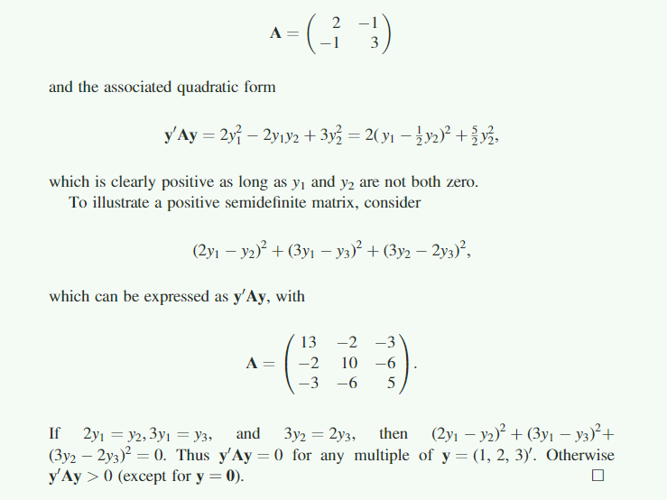</p>
<p>性质：</p>
<ol>
<li>正定矩阵的对角线都是正数。</li>
<li>半正定矩阵的对角线元素大于等于0</li>
</ol>
<p>证明：</p>
<ol>
<li>如果存在一个<strong>y’</strong> = (0,……0,1,0,……0)，第i个位置为1，其它为0。那么<strong>y’Ay</strong> = aii &gt; 0</li>
<li>半正定矩阵同理</li>
</ol>
<p>如果<strong>P</strong>是一个非奇异阵：</p>
<ol>
<li>如果<strong>A</strong>是一个正定矩阵，那么<strong>P’AP</strong>也是正定的</li>
<li>如果<strong>A</strong>是一个半正定矩阵，那么<strong>P’AP</strong>也是半正定的</li>
</ol>
<p>证明</p>
<p>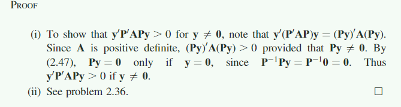</p>
<p>变种：</p>
<p>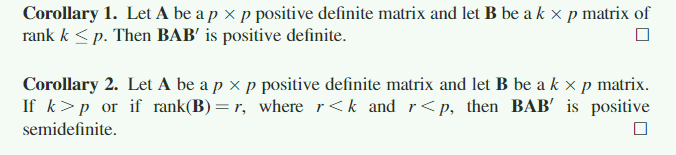</p>
<p>对于一个<strong>对称矩阵A</strong>，当且仅当存在一个非奇异阵<strong>P</strong>使得 <strong>A=P’P</strong>时，<strong>A</strong>才为正定矩阵。（反过来说，对于一个对称正定矩阵<strong>A</strong>，都可以分解为<strong>A=P’P</strong>）</p>
<p><strong>一个正定矩阵必定是非奇异阵</strong><br>
证明：根据 Cholesky 分解，可以将一个正定矩阵A分解，<strong>A=TT‘</strong>，其中T是一个<strong>非奇异</strong>的下三角矩阵（根据前面的公式，rank(T’T)=rank(T）)</p>
<p>对于任意一个矩阵<strong>B</strong>（square or rectangular）,矩阵<strong>B’B</strong>是<strong>正定</strong> 或 <strong>半正定</strong> 的。</p>
<p>如果<strong>B</strong>是一个 n × p 的矩阵。</p>
<ul>
<li>如果 rank(B) = p， 那么<strong>B’B</strong>是正定的</li>
<li>如果 rank(B) &lt; p， 那么<strong>B’B</strong>是半正定的</li>
</ul>
<p>如果A是正定的，那么其逆矩阵也是正定的。</p>
<h3 id="systems-of-equations">systems of equations</h3>
<p>假设有n个不等式，其中有p个未知量。</p>
<p>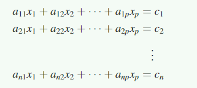</p>
<p>也可以用矩阵的形式，写为 <strong>Ax = c</strong></p>
<p>如果 n = p 并且A为非奇异阵，那么存在唯一解：x = A-1c 。 如果 n &gt; p， 此方程组无解；如果n &lt; p，此方程组有无穷多解。</p>
<p>如果the system of equations <strong>Ax = c</strong> 存在一个或多个解，那么我们称之为 <em>consistent</em>；否则，我们称之为 <em>inconsistent</em></p>
<p>为了说明consistent system of equations 的结构，我们假设 <strong>A</strong> 是一个 p × p ，秩为 r &lt; p 的矩阵。那么 A 阵的行之间存在线性相关，也就是存在<strong>b</strong>向量，使得</p>
<p>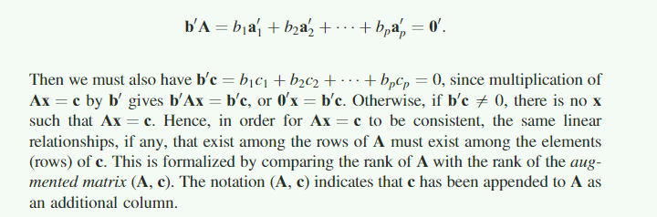</p>
<p>因此我们必须使得<strong>b’c</strong>也等于0，不然就无解。也就是说，为了使<strong>Ax = c</strong> 是 consistent，那么<strong>A</strong>中行之间存在的线性关系必须在<strong>c</strong>的相应元素之间也体现出来（比如说，A的其中一行是另一行的两倍，那么<strong>c</strong>中相应元素必须也是两倍）。具体来说就是 rank(<strong>A</strong>) = rank(<strong>(A,c)</strong>) (就是把c作为一列附在A的后面)</p>
<p><strong>定理</strong>：如果<strong>Ax = c</strong>当且仅当rank(<strong>A</strong>) = rank(<strong>(A,c)</strong>)时，才存在至少一个解向量。</p>
<p>举例：</p>
<p>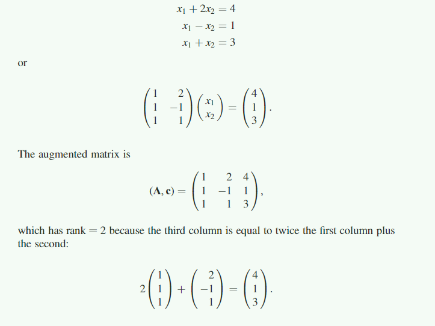</p>
<p>这个例子中，很明显第三个式子时多余的。根据前两个式子就能求解。且只有唯一解。</p>
<p>但是，如果第三个式子中的3改为2，那么此时（A，c) 的秩为3，rank(A) 为2，这个方程式无解。</p>
<p>又一个例子</p>
<p>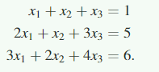</p>
<p>其中，第三个式子为前两个式子的和。rank(<strong>A</strong>) = rank(<strong>(A,c)</strong>)=2，有无穷多个解</p>
<p>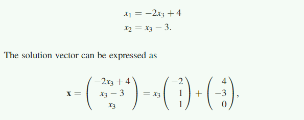</p>
<p>其中 x3 可以取任意值，x1 x2 随 x3的值而定。</p>
<h3 id="广义逆">广义逆</h3>
<p>对于不能求逆的矩阵，我们可以求其广义逆。比如 对于<strong>Ax = c</strong>求解时，其中的一个解可以通过求A的广义逆得到。</p>
<h4 id="广义逆的定义和特性">广义逆的定义和特性</h4>
<p>对于一个 n × p 的矩阵 <strong>A</strong>， 其广义逆满足如下条件</p>
<blockquote>
<p>AA^-^A = A</p>
</blockquote>
<p>广义逆不唯一，除非A是非奇异阵，在这种情况下，A^-^ = A^-1^ 。</p>
<blockquote>
<p>A generalized inverse is also called aconditional inverse</p>
</blockquote>
<p>任何一个矩阵（square or rectangular），都有广义逆。即便是向量，都有广义逆。</p>
<p><strong>定理</strong>：如果 A是  n × p ；那么其广义逆A-均为  p × n</p>
<p><strong>定理</strong>：如果A是  n × p ，其秩为r ，并且A 可以划分为以下子矩阵。其中 A11 是 r × r 的满秩矩阵。那么其逆矩阵如下。</p>
<p>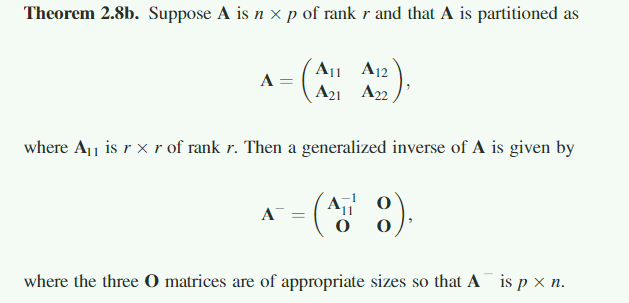</p>
<p>后面的证明我都看懂了，不过确实是拐着弯地证明了。</p>
<p><strong>引申</strong>：同上，A22也成立。<br>
进一步引申如下，对任何一个矩阵求广义逆均可按照以下5步</p>
<ol>
<li>找到一个非奇异的r × r 子矩阵 C。（甚至C中的行或列不用是在A毗邻的）</li>
<li>计算出 <strong>C^-1^</strong> 和**（C^-1^）'**</li>
<li>将<strong>C</strong>中的元素替代为**（C^-1^）'**中的元素</li>
<li>将<strong>A</strong>中的其它元素全部替换为0</li>
<li>转置上一步的结果矩阵</li>
</ol>
<p><strong>定理</strong> 如果A是  n × p ，其秩为r ，它的一个广义逆为A-</p>
<ol>
<li>rank(A^-^A) = rank(AA^-^) = rank(A) = r</li>
<li>(A^-^)’ 是 A‘ 的一个广义逆；即（A’)^-^ = (A^-^)’</li>
</ol>
<p>直接上图吧，太复杂</p>
<p>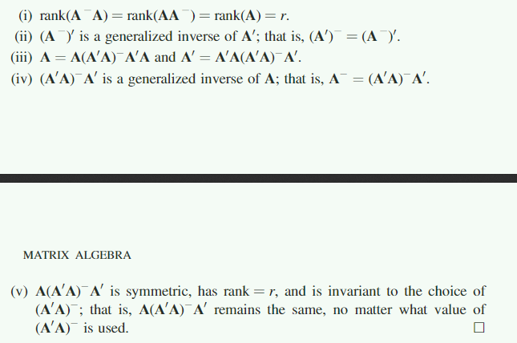</p>
<p>一个对称矩阵的广义逆不一定是对称的。但是，一个对称矩阵一定能找到对称的广义逆。这本书中，我们假定对称矩阵的广义逆都是对称的。</p>
<p>注：自己查了一下，对称的非奇异阵的逆矩阵也是对称的<br>
证明如下<br>
(A^-1^)’ = (A’)^-1^ = (A)^-1^ = A^-1^</p>
<h4 id="广义逆与方程组求解">广义逆与方程组求解</h4>
<p>如果 <strong>Ax = c</strong> 是 <em>consistent</em>， 而且 A^-^ 是 A 的一个广义逆，那么，<strong>x = A^-^c</strong> 就是方程组的一个解。<br>
证明如下：</p>
<p>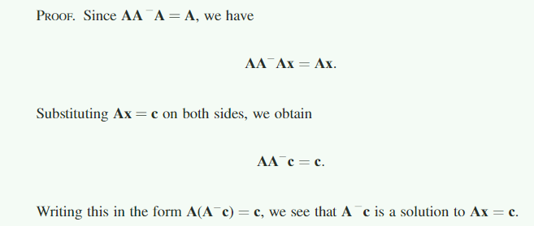</p>
<p>采用不同的广义逆，结果有所不同。</p>
<h3 id="行列式（determinant）">行列式（determinant）</h3>
<ul>
<li>奇异矩阵行列式为0；非奇异阵行列式不为0</li>
<li>如果A是正定矩阵，|A| &gt; 0</li>
</ul>
<p>后面没看，就目前看的书，没怎么用到行列式</p>
<h2 id="Random-Vectors-and-Matrices">Random Vectors and Matrices</h2>
<h3 id="introduction">introduction</h3>
<p>当我们使用线性模型时，把数据的观测值以随机向量或随机矩阵的形式表示，是一种很方便的方法。随机向量或随机矩阵指的是其中的元素都是随机变量。</p>
<p>通常来说，我们有两种形式的随机变量：</p>
<ol>
<li>对 n 个不同的个体或实验单位进行相同的测量方法得到的测量值。这里有两个条件，个体的选择是随机的；测量方法或观测方法是一致的。就比如表型观测值就是典型的彼此不相关而且有着相同的方差。</li>
<li>一个个体的 p 的不同的测量值。那么这个随机变量彼此之间是相关的，而且有者不同的方差。</li>
</ol>
<h3 id="均值、方差、协方差和相关">均值、方差、协方差和相关</h3>
<p>在这一章节中，我们会回顾单变量和双变量随机变量的性质。我们以单随机变量y为例。这里我们一般不区分随机变量y 和  y的观测值 。在很多书中，大写字母表示随机变量，而相应的小写字母表示的是一个随机变量的实现（a realization of the random variable），就像表达式 P(Y &lt; y)。这样的写法在单变量中很实用。但是，因为在这里，我们用大写字母表示矩阵，小写字母表示向量，这就会产生冲突。</p>
<p>如果 f(y) 是 随机变量 y 的概率密度曲线，y 的 期望值如下</p>
<p></p>
<p>不截图看书吧，就是推导总体的均值，方差，等等公式。</p>
<p>对于双随机变量的联合概率密度分布。如果联合概率密度等于两个边缘密度分布的乘积，那么这两个随机变量就是不想关的（independent）</p>
<p>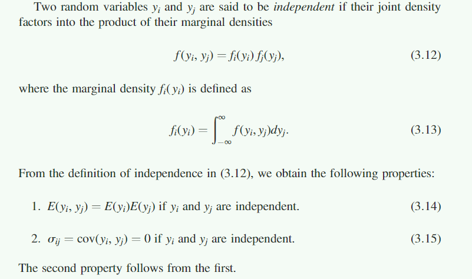</p>
<p>但是上面3.15的式子反过来不对，也就是说 σij = 0 并不意味着两个变量之间是独立的。</p>
<p>后面涉及条件概率密度的积分，看不懂，得拿本高数来看了。</p>
<p>具体推导用铅笔在书上写了。</p>
 
      <!-- reward -->
      
    </div>
    

    <!-- copyright -->
    
    <div class="declare">
      <ul class="post-copyright">
        <li>
          <i class="ri-copyright-line"></i>
          <strong>版权声明： </strong>
          
          本博客所有文章除特别声明外，著作权归作者所有。转载请注明出处！
          
        </li>
      </ul>
    </div>
    
    <footer class="article-footer">
       
<div class="share-btn">
      <span class="share-sns share-outer">
        <i class="ri-share-forward-line"></i>
        分享
      </span>
      <div class="share-wrap">
        <i class="arrow"></i>
        <div class="share-icons">
          
          <a class="weibo share-sns" href="javascript:;" data-type="weibo">
            <i class="ri-weibo-fill"></i>
          </a>
          <a class="weixin share-sns wxFab" href="javascript:;" data-type="weixin">
            <i class="ri-wechat-fill"></i>
          </a>
          <a class="qq share-sns" href="javascript:;" data-type="qq">
            <i class="ri-qq-fill"></i>
          </a>
          <a class="douban share-sns" href="javascript:;" data-type="douban">
            <i class="ri-douban-line"></i>
          </a>
          <!-- <a class="qzone share-sns" href="javascript:;" data-type="qzone">
            <i class="icon icon-qzone"></i>
          </a> -->
          
          <a class="facebook share-sns" href="javascript:;" data-type="facebook">
            <i class="ri-facebook-circle-fill"></i>
          </a>
          <a class="twitter share-sns" href="javascript:;" data-type="twitter">
            <i class="ri-twitter-fill"></i>
          </a>
          <a class="google share-sns" href="javascript:;" data-type="google">
            <i class="ri-google-fill"></i>
          </a>
        </div>
      </div>
</div>

<div class="wx-share-modal">
    <a class="modal-close" href="javascript:;"><i class="ri-close-circle-line"></i></a>
    <p>扫一扫，分享到微信</p>
    <div class="wx-qrcode">
      
    </div>
</div>

<div id="share-mask"></div>  
  <ul class="article-tag-list" itemprop="keywords"><li class="article-tag-list-item"><a class="article-tag-list-link" href="/tags/%E6%95%B0%E6%8D%AE%E5%88%86%E6%9E%90/" rel="tag">数据分析</a></li><li class="article-tag-list-item"><a class="article-tag-list-link" href="/tags/%E7%90%86%E8%AE%BA%E5%AD%A6%E4%B9%A0/" rel="tag">理论学习</a></li><li class="article-tag-list-item"><a class="article-tag-list-link" href="/tags/%E7%BA%BF%E6%80%A7%E6%A8%A1%E5%9E%8B/" rel="tag">线性模型</a></li></ul>

    </footer>
  </div>

   
  <nav class="article-nav">
    
      <a href="/posts/59ca09be/" class="article-nav-link">
        <strong class="article-nav-caption">上一篇</strong>
        <div class="article-nav-title">
          
            DMU软件使用笔记
          
        </div>
      </a>
    
    
      <a href="/posts/3263dd4c/" class="article-nav-link">
        <strong class="article-nav-caption">下一篇</strong>
        <div class="article-nav-title">Data Analysis for the Life Sciences</div>
      </a>
    
  </nav>

  
   
<div class="gitalk" id="gitalk-container"></div>

<link rel="stylesheet" href="https://cdn.jsdelivr.net/npm/gitalk@1.6.2/dist/gitalk.css">


<script src="https://cdn.jsdelivr.net/npm/gitalk@1.6.2/dist/gitalk.min.js"></script>


<script src="https://cdn.jsdelivr.net/npm/blueimp-md5@2.10.0/js/md5.min.js"></script>

<script type="text/javascript">
  var gitalk = new Gitalk({
    clientID: '6d2af33404b444be44e5',
    clientSecret: 'f133b587d5da8ae224e4e922f069e3984d8db35c',
    repo: 'gitalk',
    owner: 'VincereZhou',
    admin: ['VincereZhou'],
    // id: location.pathname,      // Ensure uniqueness and length less than 50
    id: md5(location.pathname),
    distractionFreeMode: false,  // Facebook-like distraction free mode
    pagerDirection: 'last'
  })

  gitalk.render('gitalk-container')
</script>

     
</article>

</section>
      <footer class="footer">
  <div class="outer">
    <ul>
      <li>
        Copyrights &copy;
        2019-2021
        <i class="ri-heart-fill heart_icon"></i> Vincere Zhou
      </li>
    </ul>
    <ul>
      <li>
        
        
        <span>
  <span><i class="ri-user-3-fill"></i>访问人数:<span id="busuanzi_value_site_uv"></span></s>
  <span class="division">|</span>
  <span><i class="ri-eye-fill"></i>浏览次数:<span id="busuanzi_value_page_pv"></span></span>
</span>
        
      </li>
    </ul>
    <ul>
      
    </ul>
    <ul>
      
    </ul>
    <ul>
      <li>
        <!-- cnzz统计 -->
        
      </li>
    </ul>

    <!-- 与只只在一起天数 -->
	<ul>
		<li><span id="lovetime_span"></span></li>
	</ul>
    <script type="text/javascript">			
        function show_runtime() {
            window.setTimeout("show_runtime()", 1000);
            X = new Date("03/04/2021 22:11:00");
            Y = new Date();
            T = (Y.getTime() - X.getTime());
            M = 24 * 60 * 60 * 1000;
            a = T / M;
            A = Math.floor(a);
            b = (a - A) * 24;
            B = Math.floor(b);
            c = (b - B) * 60;
            C = Math.floor((b - B) * 60);
            D = Math.floor((c - C) * 60);
            lovetime_span.innerHTML = "只只和男朋友在一起了 " + A + "天" + B + "小时" + C + "分" + D + "秒"
        }
        show_runtime();
    </script>

  </div>
</footer>
      <div class="float_btns">
        <div class="totop" id="totop">
  <i class="ri-arrow-up-line"></i>
</div>

<div class="todark" id="todark">
  <i class="ri-moon-line"></i>
</div>

      </div>
    </main>
    <aside class="sidebar on">
      <button class="navbar-toggle"></button>
<nav class="navbar">
  
  <div class="logo">
    <a href="/"></a>
  </div>
  
  <ul class="nav nav-main">
    
    <li class="nav-item">
      <a class="nav-item-link" href="/">主页</a>
    </li>
    
    <li class="nav-item">
      <a class="nav-item-link" href="/archives">归档</a>
    </li>
    
    <li class="nav-item">
      <a class="nav-item-link" href="/categories">分类</a>
    </li>
    
    <li class="nav-item">
      <a class="nav-item-link" href="/tags">标签</a>
    </li>
    
    <li class="nav-item">
      <a class="nav-item-link" href="/friends">友链</a>
    </li>
    
    <li class="nav-item">
      <a class="nav-item-link" href="/posts/ac7827ff">只只</a>
    </li>
    
    <li class="nav-item">
      <a class="nav-item-link" href="/about">关于</a>
    </li>
    
  </ul>
</nav>
<nav class="navbar navbar-bottom">
  <ul class="nav">
    <li class="nav-item">
      
      <a class="nav-item-link nav-item-search"  title="搜索">
        <i class="ri-search-line"></i>
      </a>
      
      
      <a class="nav-item-link" target="_blank" href="/atom.xml" title="RSS Feed">
        <i class="ri-rss-line"></i>
      </a>
      
    </li>
  </ul>
</nav>
<div class="search-form-wrap">
  <div class="local-search local-search-plugin">
  <input type="search" id="local-search-input" class="local-search-input" placeholder="Search...">
  <div id="local-search-result" class="local-search-result"></div>
</div>
</div>
    </aside>
    <script>
      if (window.matchMedia("(max-width: 768px)").matches) {
        document.querySelector('.content').classList.remove('on');
        document.querySelector('.sidebar').classList.remove('on');
      }
    </script>
    <div id="mask"></div>

<!-- #reward -->
<div id="reward">
  <span class="close"><i class="ri-close-line"></i></span>
  <p class="reward-p"><i class="ri-cup-line"></i>请我喝杯咖啡吧~</p>
  <div class="reward-box">
    
    <div class="reward-item">
      
      <span class="reward-type">支付宝</span>
    </div>
    
    
    <div class="reward-item">
      
      <span class="reward-type">微信</span>
    </div>
    
  </div>
</div>
    
<script src="/js/jquery-2.0.3.min.js"></script>


<script src="/js/lazyload.min.js"></script>

<!-- Tocbot -->


<script src="/js/tocbot.min.js"></script>

<script>
  tocbot.init({
    tocSelector: '.tocbot',
    contentSelector: '.article-entry',
    headingSelector: 'h1, h2, h3, h4, h5, h6',
    hasInnerContainers: true,
    scrollSmooth: true,
    scrollContainer: 'main',
    positionFixedSelector: '.tocbot',
    positionFixedClass: 'is-position-fixed',
    fixedSidebarOffset: 'auto'
  });
</script>

<script src="https://cdn.jsdelivr.net/npm/jquery-modal@0.9.2/jquery.modal.min.js"></script>
<link rel="stylesheet" href="https://cdn.jsdelivr.net/npm/jquery-modal@0.9.2/jquery.modal.min.css">
<script src="https://cdn.jsdelivr.net/npm/justifiedGallery@3.7.0/dist/js/jquery.justifiedGallery.min.js"></script>

<script src="/dist/main.js"></script>

<!-- ImageViewer -->

<!-- Root element of PhotoSwipe. Must have class pswp. -->
<div class="pswp" tabindex="-1" role="dialog" aria-hidden="true">

    <!-- Background of PhotoSwipe. 
         It's a separate element as animating opacity is faster than rgba(). -->
    <div class="pswp__bg"></div>

    <!-- Slides wrapper with overflow:hidden. -->
    <div class="pswp__scroll-wrap">

        <!-- Container that holds slides. 
            PhotoSwipe keeps only 3 of them in the DOM to save memory.
            Don't modify these 3 pswp__item elements, data is added later on. -->
        <div class="pswp__container">
            <div class="pswp__item"></div>
            <div class="pswp__item"></div>
            <div class="pswp__item"></div>
        </div>

        <!-- Default (PhotoSwipeUI_Default) interface on top of sliding area. Can be changed. -->
        <div class="pswp__ui pswp__ui--hidden">

            <div class="pswp__top-bar">

                <!--  Controls are self-explanatory. Order can be changed. -->

                <div class="pswp__counter"></div>

                <button class="pswp__button pswp__button--close" title="Close (Esc)"></button>

                <button class="pswp__button pswp__button--share" style="display:none" title="Share"></button>

                <button class="pswp__button pswp__button--fs" title="Toggle fullscreen"></button>

                <button class="pswp__button pswp__button--zoom" title="Zoom in/out"></button>

                <!-- Preloader demo http://codepen.io/dimsemenov/pen/yyBWoR -->
                <!-- element will get class pswp__preloader--active when preloader is running -->
                <div class="pswp__preloader">
                    <div class="pswp__preloader__icn">
                        <div class="pswp__preloader__cut">
                            <div class="pswp__preloader__donut"></div>
                        </div>
                    </div>
                </div>
            </div>

            <div class="pswp__share-modal pswp__share-modal--hidden pswp__single-tap">
                <div class="pswp__share-tooltip"></div>
            </div>

            <button class="pswp__button pswp__button--arrow--left" title="Previous (arrow left)">
            </button>

            <button class="pswp__button pswp__button--arrow--right" title="Next (arrow right)">
            </button>

            <div class="pswp__caption">
                <div class="pswp__caption__center"></div>
            </div>

        </div>

    </div>

</div>

<link rel="stylesheet" href="https://cdn.jsdelivr.net/npm/photoswipe@4.1.3/dist/photoswipe.min.css">
<link rel="stylesheet" href="https://cdn.jsdelivr.net/npm/photoswipe@4.1.3/dist/default-skin/default-skin.min.css">
<script src="https://cdn.jsdelivr.net/npm/photoswipe@4.1.3/dist/photoswipe.min.js"></script>
<script src="https://cdn.jsdelivr.net/npm/photoswipe@4.1.3/dist/photoswipe-ui-default.min.js"></script>

<script>
    function viewer_init() {
        let pswpElement = document.querySelectorAll('.pswp')[0];
        let $imgArr = document.querySelectorAll(('.article-entry img:not(.reward-img)'))

        $imgArr.forEach(($em, i) => {
            $em.onclick = () => {
                // slider展开状态
                // todo: 这样不好，后面改成状态
                if (document.querySelector('.left-col.show')) return
                let items = []
                $imgArr.forEach(($em2, i2) => {
                    let img = $em2.getAttribute('data-idx', i2)
                    let src = $em2.getAttribute('data-target') || $em2.getAttribute('src')
                    let title = $em2.getAttribute('alt')
                    // 获得原图尺寸
                    const image = new Image()
                    image.src = src
                    items.push({
                        src: src,
                        w: image.width || $em2.width,
                        h: image.height || $em2.height,
                        title: title
                    })
                })
                var gallery = new PhotoSwipe(pswpElement, PhotoSwipeUI_Default, items, {
                    index: parseInt(i)
                });
                gallery.init()
            }
        })
    }
    viewer_init()
</script>

<!-- MathJax -->

<script type="text/x-mathjax-config">
  MathJax.Hub.Config({
      tex2jax: {
          inlineMath: [ ['$','$'], ["\\(","\\)"]  ],
          processEscapes: true,
          skipTags: ['script', 'noscript', 'style', 'textarea', 'pre', 'code']
      }
  });

  MathJax.Hub.Queue(function() {
      var all = MathJax.Hub.getAllJax(), i;
      for(i=0; i < all.length; i += 1) {
          all[i].SourceElement().parentNode.className += ' has-jax';
      }
  });
</script>

<script src="https://cdn.jsdelivr.net/npm/mathjax@2.7.6/unpacked/MathJax.js?config=TeX-AMS-MML_HTMLorMML"></script>
<script>
  var ayerConfig = {
    mathjax: true
  }
</script>

<!-- Katex -->

<!-- busuanzi  -->


<script src="/js/busuanzi-2.3.pure.min.js"></script>


<!-- ClickLove -->

<!-- ClickBoom1 -->

<!-- ClickBoom2 -->

<!-- CodeCopy -->


<link rel="stylesheet" href="/css/clipboard.css">

<script src="https://cdn.jsdelivr.net/npm/clipboard@2/dist/clipboard.min.js"></script>
<script>
  function wait(callback, seconds) {
    var timelag = null;
    timelag = window.setTimeout(callback, seconds);
  }
  !function (e, t, a) {
    var initCopyCode = function(){
      var copyHtml = '';
      copyHtml += '<button class="btn-copy" data-clipboard-snippet="">';
      copyHtml += '<i class="ri-file-copy-2-line"></i><span>COPY</span>';
      copyHtml += '</button>';
      $(".highlight .code pre").before(copyHtml);
      $(".article pre code").before(copyHtml);
      var clipboard = new ClipboardJS('.btn-copy', {
        target: function(trigger) {
          return trigger.nextElementSibling;
        }
      });
      clipboard.on('success', function(e) {
        let $btn = $(e.trigger);
        $btn.addClass('copied');
        let $icon = $($btn.find('i'));
        $icon.removeClass('ri-file-copy-2-line');
        $icon.addClass('ri-checkbox-circle-line');
        let $span = $($btn.find('span'));
        $span[0].innerText = 'COPIED';
        
        wait(function () { // 等待两秒钟后恢复
          $icon.removeClass('ri-checkbox-circle-line');
          $icon.addClass('ri-file-copy-2-line');
          $span[0].innerText = 'COPY';
        }, 2000);
      });
      clipboard.on('error', function(e) {
        e.clearSelection();
        let $btn = $(e.trigger);
        $btn.addClass('copy-failed');
        let $icon = $($btn.find('i'));
        $icon.removeClass('ri-file-copy-2-line');
        $icon.addClass('ri-time-line');
        let $span = $($btn.find('span'));
        $span[0].innerText = 'COPY FAILED';
        
        wait(function () { // 等待两秒钟后恢复
          $icon.removeClass('ri-time-line');
          $icon.addClass('ri-file-copy-2-line');
          $span[0].innerText = 'COPY';
        }, 2000);
      });
    }
    initCopyCode();
  }(window, document);
</script>


<!-- CanvasBackground -->


    
  </div>
<script src="/live2dw/lib/L2Dwidget.min.js?094cbace49a39548bed64abff5988b05"></script><script>L2Dwidget.init({"pluginRootPath":"live2dw/","pluginJsPath":"lib/","pluginModelPath":"assets/","tagMode":false,"debug":false,"model":{"jsonPath":"live2d-widget-model-wanko"},"display":{"position":"left","width":150,"height":300,"hOffset":80,"vOffset":-70},"mobile":{"show":false,"scale":0.5},"log":false});</script></body>

</html>